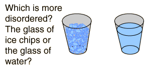

Entropy and Disorder
If you assert that nature tends to take things from order to disorder and give an example or two, then you will get almost universal recognition and assent. It is a part of our common experience. Spend hours cleaning your desk, your basement, your attic, and it seems to spontaneously revert back to disorder and chaos before your eyes. So if you say that entropy is a measure of disorder, and that nature tends toward maximum entropy for any isolated system, then you do have some insight into the ideas of the second law of thermodynamics.
Some care must be taken about how you define "disorder" if you are going to use it to understand entropy. A more precise way to characterize entropy is to say that it is a measure of the "multiplicity" associated with the state of the objects. If a given state can be accomplished in many more ways, then it is more probabable than one which can be accomplished in only a few ways. When "throwing dice", throwing a seven is more probable than a two because you can produce seven in six different ways and there is only one way to produce a two. So seven has a higher multiplicity than a two, and we could say that a seven represents higher "disorder" or higher entropy.
|

|
For a glass of water the number of molecules is astronomical. The jumble of ice chips may look more disordered in comparison to the glass of water which looks uniform and homogeneous. But the ice chips place limits on the number of ways the molecules can be arranged. The water molecules in the glass of water can be arranged in many more ways; they have greater "multiplicity" and therefore greater entropy.
|
| Index
Entropy concepts |